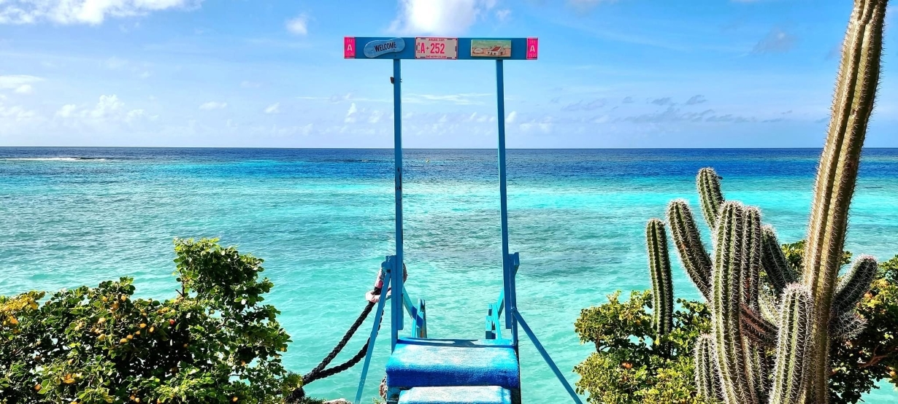

Bon bini! (=Welcome!)
After years of living on the One Happy Island, and fully experiencing the local island life, I would love to share my tips and tricks for your trip to Aruba. The island is diverse and beautiful, and there is loads to explore beyond the common touristic attractions. I will share my recommendations with regards to activities, beaches and restaurants. I hope my tips will help you have a memorable vacation - a once in a lifetime!

Read more about me here.